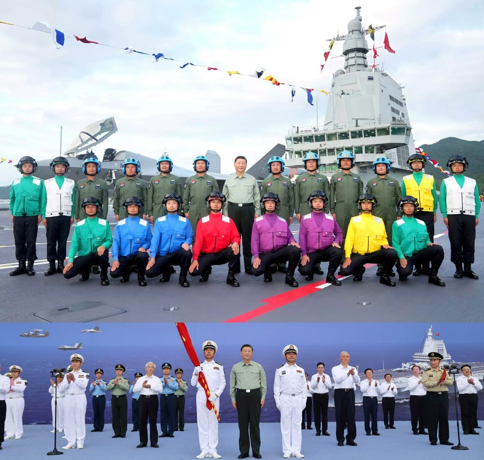

世界苦茶11月08日新闻 | 39条 | 中国航母福建舰正式入列

中国航母福建舰正式入列 | 四中全会被跳过的方红卫被查引发关注 | 台湾副总统呼吁与欧盟加强联系 | 美国跳过在联合国的对美人权审查 | 中国10月的出口量下跌
苦茶数据
美元兑人民币：7.12（昨日7.12，前日7.12）
美元兑日元：153.54（昨日153.19，前日153.86）
上证指数：休市（昨日3997，前日4005)
标普500指数：休市（昨日6728，前日6720）
比特币：102481（昨日102333，前日103361）
布伦特原油：63.63（昨日63.68，前日63.56）
中国新闻
• 中国第三艘航母福建舰入列 习近平亲自决策采电磁弹射。
中国第三艘航空母舰福建号星期三已在海南三亚入列。根据中国官媒报道，中共总书记、中国国家主席习近平当天出席了福建舰入列授旗仪式并登舰视察，还亲自按下电磁弹射按钮。福建舰是中国首艘电磁弹射型航母，由中国完全自主设计建造。新华社称，身兼中央军委主席的习近平“亲自决策”福建舰采用电磁弹射技术。中国今年9月成功利用这项技术让两架战斗机和一台空中预警机从福建舰上弹射起飞，被视为中国军事科技的一大突破，美国总统特朗普则抨击这项技术不可靠。福建舰入列授旗仪式是星期三下午4时30分许在三亚军港举行，官方媒体是到星期五才报道。
• 候补中央委员四中全会被“跳过” 西安市委书记方红卫被查。
中共西安市委书记方红卫连日在重要场合缺席，引起外界猜测。香港媒体引述消息称，方红卫星期三准备参加一场官方活动以就他出事传闻辟谣时，半路被中共中央纪委人员拦下，带走接受审查。中央纪委国家监委网站星期五发布消息，陕西省委常委、西安市委书记方红卫涉嫌严重违纪违法，目前正接受中央纪委国家监委纪律审查和监察调查。香港《明报》引述西安消息人士报道，方红卫星期三原定调研西安市宗教工作，并拟对行程作公开报道，以就外界指他“神隐”出事辟谣。不过，方红卫在半路就被中共中央纪委人员拦下带走。报道还引述一名在当地经商的外省企业家称，方红卫不仅本人涉贪，还纵容、默许亲属利用他的影响力谋取私利。
• 德州农工大学化学系副主任方磊加盟了一家耗资30亿美元的中国实验室。
长期任教于德州农工大学化学系的方磊已回国加入前沿的甬江实验室——这一由国家支持的研究中心在不到四年的时间里累计引资已超过260亿元人民币。方在美国历经近二十年建立了卓著的职业生涯，晋升为德州农工大学化学系副系主任。今年早些时候他辞去大学职务，全职出任甬江实验室工作。方现任Y-Lab功能有机材料中心讲席教授兼主任，带领团队开发用于柔性电子，可穿戴设备，脑机接口和可再生能源技术的下一代有机材料。
• 玛哈·哇集拉隆功国王将进行50年来泰国君主首次访华。
泰王玛哈·哇集拉隆功将进行50年来泰国君主首次访华 据北京方面称，此次国事访问将是泰王自2016年即位以来对“重大国家”的首次正式访问 泰国国王玛哈·哇集拉隆功本月将启程对中国进行访问，这是自两国半个世纪前建交以来，泰国君主首次访华。应中国国家主席习近平邀请的这次国事访问，定于11月13日至17日举行，北京外交部称，此行将使中国成为泰王自2016年登基以来正式访问的“第一个重大国家”。外交部发言人毛宁周四表示：“近年来，中泰关系保持稳健发展。两国如同一家，关系一如既往地密切。通过此次访问，中国期待发扬传统友谊，巩固政治互信。
• 中国西南工业基地力求在创新药领域取得突破。
中国西南工业基地瞄准创新药突破 随着国家加大科技自立自强力度，重庆公布支持创新药发展的计划。该计划的主要目标包括：到2027年每年有1至3个创新药获批上市，建设3个创新药产业集群以促进联合研发和技术转移，并支持创新企业、科研院所和高校在集群建设中发挥主导作用。重庆市政府在周四公开发布的这项25条措施中表示：“聚焦创新药核心技术攻关，加快产品开发，持续优化产业创新体系。”作为以制造业为主的传统工业基地，重庆去年见证了首个一类创新药——用于治疗银屑病的注射剂—获准上市。据国家药品监督管理局，一类创新药是指含有结构明确、药理作用清楚的新化合物，具有临床价值，且在全球范围内尚未上市的药物。
• 中国呼吁就伊朗核计划展开新一轮会谈以打破“僵局”。
外长王毅在英国、法国和德国决定恢复对伊朗制裁后对德黑兰表示支持 “中国感谢伊朗近日重申无意发展核武器，并支持伊朗和平利用核能的权利，”中国外交部长王毅周三在与伊朗副外长阿巴斯·阿拉格奇的通话中表示。王毅警告说，围绕该问题存在“僵局”，这“不符合国际社会的共同利益”。“希望各方保持对话和沟通，把伊朗核问题重新带回对话和谈判轨道，”他说。今年九月，英国、法国、德国和欧盟启动了“回弹”机制，恢复对德黑兰的广泛联合国经济和军事制裁，此举距离这些制裁被解除已有十年。
• 330家日企参加中国进博会，是上届1.5倍。
日美等外资企业在11月6日在上海开幕的「中国国际进口博览会」上展示了AI等新技术和新产品。约有330家企业日本企业参加本届进博会，达到上次的1.5倍。在美国企业方面，也有从食品到晶片等广泛领域的企业参展。松下控股的副社长本间哲朗当天表示，「将使用中国的AI等，在被称为‘内卷’的竞争激烈的中国市场中胜出」，宣传了搭载AI、提高便利性的洗衣机等。此外，三菱电机也展出了使用机器人的AI外观检测产线。
印太新闻
• 台湾排名第二的领导人在欧洲议会发表令人震惊的演讲。
台湾第二号人物萧美琴在欧洲议会发表震惊演讲 这位副手周五在欧洲议会出人意料地出席并发言了一个未正式宣布的议员会议，此举很可能招致北京强烈反应。萧美琴在议会内举行的、由来自世界各地主张对华更强硬政策的议员组成的非正式会议上发言，她表示“海峡两岸稳定不仅是地区问题，还是全球繁荣的基石”，并鼓励欧洲与台湾加强联系。“尽管被排除在国际组织之外，台湾仍在努力。我们参与人道援助。即使没有席位，我们也在维护全球标准，”萧在强硬派的跨议会反华联盟年度会议上说。北京将台湾视为中国的一部分，并认为有必要时可诉诸武力实现统一。包括美国和欧盟成员国在内的大多数国家不承认台湾为独立国家。
• “马习会”10周年 郑丽文：国民党要成为主动、关键的和平缔造者。
台湾最大在野党、中国国民党主席郑丽文指出，台海两岸和平共荣是两岸人民共同心愿，“九二共识”是两岸中国人智慧的最高展现。她强调，国民党会坚定循此路线走下去，“成为主动的、关键的和平缔造者”。马英九基金会与海峡两岸经贸文化交流协会星期五在台北格莱天漾饭店，共同举办“马习会十周年研讨会”，郑丽文在会中作上述表示。1993年“辜汪会谈”和2015年“马习会”都在新加坡举行，郑丽文感谢新加坡长期勇敢坚定为区域和平、两岸关系做出卓越贡献。马英九原本要出席研讨会，因感冒改以脸书发文。他感谢习近平当年以极大的魄力与决心，和他一起促成历史性的两岸领导人会晤，称这是“两岸交流制度化”的最高实践。
• 雅加达一所高中的清真寺发生爆炸，超过50人受伤。
印度尼西亚一座清真寺在周五祈祷时发生爆炸，造成50多人受伤，警方已确认一名17岁学生为嫌疑人。事件发生在当地时间大约12:15，地点位于首都雅加达哥拉帕加丁一处包含清真寺的校区内。受害者多为学生，伤情从不同程度受伤到严重烧伤不等。印尼国家警察总长利斯蒂奥·西吉特·普拉博沃表示，嫌疑人也受伤，目前正在进行调查，“包括嫌疑人如何组装和实施袭击”。爆炸发生后，排爆小组被派往这所国立高中校园，收集证据并确保没有其他爆炸装置。一名学生向印尼国营通讯社安塔拉称，一枚自制炸弹是由一名经常被其他学生欺负的学生带入的。
科技新闻
• 丹麦政府计划禁止15岁以下儿童使用社交媒体。
丹麦政府周五宣布达成一项协议，禁止15岁以下任何人使用社交媒体，此举加大了对大型科技平台的压力，因为人们越来越担心儿童在数字化世界中被有害内容和商业利益卷入。该举措将在经过具体评估后，赋予部分家长在孩子13岁起允许其使用社交媒体的权利。目前尚不清楚此类禁令将如何实施：许多科技平台已限制未满青少年注册。官员和专家表示，此类限制并非总是有效。如果实施，这将是欧盟成员国在限制青少年和更小儿童使用社交媒体方面采取的最严厉措施之一，而在日益上网的世界中，许多地方对此表示担忧。
• 欧洲警方希望利用人工智能打击犯罪。
欧盟执法机构希望加快获取人工智能工具以打击严重犯罪的速度，一位高官表示。犯罪分子在“以其生命中最尽兴的时刻”“恶意部署人工智能”，但欧盟的欧洲刑警组织在尝试使用新技术时受制于法律审查，副执行主任尤尔根·艾布纳对POLITICO表示。根据欧盟法律，当局必须进行数据保护和基本权利评估。这些审查可能会将人工智能的使用延迟多达八个月，艾布纳说。他补充称，加快这一流程可能在存在“生命威胁”的时间敏感情况下产生决定性影响。
• DNA研究先驱詹姆斯·沃森去世，享年97岁。
DNA先驱詹姆斯·沃森去世，享年97岁 诺贝尔奖获得者、美国科学家詹姆斯·沃森——DNA结构的共同发现者之一——已于97岁去世。作为20世纪最重大的突破之一，沃森于1953年与英国科学家弗朗西斯·克里克共同确定了DNA的双螺旋结构，为分子生物学的迅速发展奠定了基础。但他在种族和性别问题上的言论严重损害了他的声誉和地位。在一档电视节目中，他提到一种有争议的观点，称基因导致黑人和白人在智商测试上的差异。沃森的死讯由其长期工作与研究的冷泉港实验室向英国广播公司确认。沃森于1962年与莫里斯·威尔金斯和克里克共同因发现DNA双螺旋结构获得诺贝尔奖。
经济新闻
• 中国据报开始着手放宽稀土出口管制 但力度未达特朗普预期。
中美元首在釜山会晤达成临时贸易休战协议后，中国据报已开始设计新的稀土许可制度，这将有望加快中国稀土出口的速度，但不太可能如美国期待的彻底取消限制。两名知情人士说，中国商务部已告知部分稀土出口商，未来他们可以申请新的、流程简化的许可证，并在行业简报会上概述了申请所需的文件。中国国家主席习近平与美国总统特朗普上周会晤后，作为双方达成的协议的一部分，中国表示将暂停10月份宣布实施的限制措施一年。不过，对于4月份实施的、曾扰乱全球供应链的更广泛管制措施，中国商务部至今未作任何公开表态。美国白宫11月1日曾宣称，中国已同意推出通用许可证，而此类许可证实际上标志着中国稀土出口管制的终结。
• 美国指责中国碳排放量巨大 中国常驻联合国副代表耿爽两度反驳。
中国常驻联合国副代表耿爽星期四在安理会气候与安全问题公开会上，反驳美国代表对中国的指责。据中国官媒新华社报道，在纽约时间星期四的联合国安全理事会会议上，美国代表内格里亚两次发言，指责中国碳排放量巨大，称中国“通过不正当手段获得经济优势并污染环境”，同时宣称美国环境政策“成功”、是各国“楷模”。耿爽两度回应，反驳美国代表对中国的指责。他表示，中国是全球公认的履行减排承诺意志最坚定、行动最有力、效果最显着的国家，是全球应对气候变化绝对的行动派。中国有14亿人口，国内生产总值居全球第二，多年来对世界经济增长贡献率年均超过30%，中国人均碳排放量在世界上并不处于高水平。
• 美国兑现芬太尼承诺 中国暂缓对美实施24%关税一年。
中国宣布继续暂停对美实施24%关税一年，并停止对美国部分农产品加征最高15%的关税。不过进口美国大豆仍面临13%的关税，成本高于巴西豆，中国市场对美豆的需求预计难以大幅回升。华盛顿星期二正式发布行政令，下星期一起把因芬太尼问题对中国输美商品征收的关税减半至10%后，中国国务院关税税则委员会星期三公告，调整对原产于美国的进口商品加征关税措施。公告称，为落实中美经贸磋商达成的成果共识，自下星期一下午1时零1分起，在一年内继续暂停实施24%对美加征关税的税率，保留10%对美加征关税的税率。
• 随着政府停摆持续，美国人对经济的看法愈发悲观。
创纪录的政府停摆使美国人对经济前景的看法变得更加悲观。密歇根大学最新的消费者信心调查显示，该指数本月从10月的53.6降至50.3。自2022年6月以来，这是最低水平——当时的读数创下了自该调查1950年代创立以来的最低纪录。密歇根大学消费者调查主管乔安妮·许在一份声明中表示，“随着联邦政府停摆持续超过一个月，消费者现在开始担忧这可能对经济带来负面影响。”本月的下滑较10月下降了6.2%，与去年11月相比下降了29.9%。而FactSet调查的经济学家原本预计本月会有小幅改善。FwdBonds首席经济学家克里斯·鲁普基在周五发布的评论中表示。
• 阿里巴巴加码面向人工智能领域的“超大规模”计算基础设施。
阿里重押“超大规模”计算基础设施计划，应对日益增长的人工智能需求 阿里云“超AI云”将具备满足行业巨量算力需求的技术。阿里巴巴集团董事长兼首席执行官吴永明在周五的中国年度互联网产业峰会上表示，阿里巴巴将继续投资超大规模计算基础设施，以赋能人工智能时代。吴在周五位于浙江东部乌镇举行的2025世界互联网大会开幕式上对与会者表示，“满足AI产业的需求需要超大规模的基础设施和全栈技术的积累”。该大会将持续到周日。
• 荷兰部长“信任”中国将在未来几天恢复向Nexperia交付芯片。
荷兰经济部长“信任”中国将在未来几天恢复向Nexperia交付芯片 希望在海牙“在担心贸易后果中似乎软化立场”后僵局或很快化解 阅读时间：2分钟 为什么可以信任南华早报 广东可可·冯报道 荷兰经济部长文森特·卡雷曼斯周五表示，中国可能会在“未来几天”恢复向Nexperia在欧洲及全球客户供应芯片，这表明荷兰政府已“软化立场”，也让人们对这一曾威胁扰乱全球汽车生产的争端出现突破抱有希望。
• 贸易战冲击导致中国10月出口下滑。
中国10月出口下滑，企业观望习近平—特朗普峰会及贸易战重置 在与美国激烈的贸易争端背景下，中国10月出口下降——但近来两国高层会谈已缓解紧张局势。海关周五公布的数据显示，上月出口额同比下降1.1%，至3053.5亿美元。该数字低于9月8.3%的增幅，也未达中国金融数据供应商Wind预测的2.84%增长。10月进口为2152.8亿美元，同比上升1%，亦低于9月7.4%的增幅和Wind预测的4.49%。中国贸易顺差为900.7亿美元。分析人士表示，随着为规避美国关税而提前发运的提振效应消退，加之人民币近期升值，出口可能有所走弱。
• 摩根士丹利：随着开发商转变重点，中国REIT规模将增至1万亿美元。
摩根士丹利：随着开发商转变策略，中国REIT规模将增长至1万亿美元 开发商预计将改变方向，更加注重经常性租金收入和物业管理费。摩根士丹利在周四的一份报告中表示，经过25年主要侧重住宅板块的发展后，中国内地开发商正越来越少依赖能够带来一次性利润的建筑项目。这一趋势反映出更多开发商正在加速转变经营策略，聚焦于经常性租金收入和物业管理费。“这一转变可能改变开发商的竞争格局，重塑行业的长期投资逻辑。”
• 为什么 OpenAI 在周四启动危机公关模式。
全球领先的AI公司及ChatGPT母公司OpenAI周四因一则被广泛关注的表述陷入恐慌。两位高管急忙收回此前言论，该言论暗示OpenAI可能需要政府支持来承担其已承诺购买的价值1.4万亿美元的芯片与数据中心基础设施。以下是事态如何发展以及为何被撤回的言论如此具争议性。OpenAI首席财务官Sarah Friar周三在一次场合的发言引发关注，她表示美国政府应当为公司在人工智能基础设施上的激进投资提供“后盾”。
• 本田在中国调整新车开发，推迟发售旗舰EV。
计划将原定2025年12月之前销售的纯电动汽车旗舰车型的推出时间推迟到2026年以后。本田与比亚迪等当地企业的价格竞争非常激烈。与丰田和日产汽车等日系车企相比，本田也处于一家独输的局面。为了提高成本竞争力，本田将重新制定纯电动汽车的销售战略。使用当地开发的专用底盘的系列产品「烨」于2025年3月发售第一款车。原计划在12月之前发售的第2款纯电动旗舰轿跑「GT 」的推出将延期。
• 日产今日宣布将出售横滨市内的总部大楼。
日产汽车今日宣布将出售横滨市内的总部大楼。转让价格970亿日元，将在2025财年的合并财报中计入 739亿日元的特别利润。日产受主力美国市场的销售低迷影响，经营陷入困境。将出售资产改善财务体制，加快经营重建。买家是特殊目的公司(SPC)MJI。这是美国投资基金KKR旗下公司和瑞穗不动产投资顾问组建的私募基金，主要由台湾汽车零部件制造商敏实集团出资。出售手续将于12月完成。日产签订了 “售后回租” 合同，将在20年内继续使用这处设施。由于采用售后回租方式，在总部大楼出售后，日产汽车的员工仍可继续在该设施开展业务。
俄乌战争
• 乌克兰估计其在2026年生产的远程武器产值将超过300亿美元。
乌克兰官员11月6日表示，乌克兰到2026年生产远程能力的潜力预计将超过350亿美元，甚至可能高达600亿美元。在一次对记者的闭门简报会上，国家安全与国防委员会秘书鲁斯特姆·乌梅罗夫和总统府战略产业顾问奥列克桑德·卡米申表示，当前乌克兰国防工业的年生产能力约为350亿美元。尽管乌克兰需要尽可能多的无人机来保卫国家，乌梅罗夫和卡米申表示，部分产能将作为“对友好国家的可控出口”用于自筹资金，即通过销售产生收入再投入生产。他们称，乌克兰无法仅靠本国预算或西方盟友的财政援助来承担国内防务生产的全部成本。
• 欧尔班在华盛顿会见特朗普，讨论俄罗斯石油问题与对乌克兰的战争。
编辑注：此报道正在更新。匈牙利总理维克多·欧尔班于11月7日抵达白宫，会见美国总统唐纳德·特朗普，布达佩斯希望获得针对俄罗斯石油部门近期制裁的豁免。匈牙利外长西雅尔托·彼得表示，两国计划签署“一项重要的核合作协议”。西雅尔托在X上写道，“考虑到我们的地理现实，维持从俄罗斯购买能源而不受制裁或法律限制的能力，对匈牙利的能源安全至关重要。”作为特朗普的亲密意识形态盟友，欧尔班一直抵制停止购买俄油气的压力。在特朗普政府于十月下旬对俄罗斯能源巨头卢克石油和俄石油实施制裁后，欧尔班表示匈牙利将寻求“规避”这些限制。
• 乌克兰军队为守住波克罗夫斯克而战，这场战斗既是为争夺领土，也是为争夺话语权。
若波克罗夫斯克失守，可能为俄军夺取乌克兰东部顿巴斯地区其余地区铺平道路，这是普京的一个关键目标。该市的命运也可能影响美国对这场战争的看法并左右和谈进程。基辅——随着波克罗夫斯克之战进入关键阶段，决定乌克兰顿涅茨克地区未来的时刻临近。士兵和分析人士告诉美联社，俄乌双方交织在一起，以至于有时在争夺同一栋居民楼的控制权。但远离乌克兰东部战场，波克罗夫斯克在外交角力中同样重要，俄乌双方都试图说服美国总统唐纳德·特朗普，自己在战斗中占上风、对方更为脆弱。俄方称其部队已包围波克罗夫斯克，并挫败了乌方打通城市后勤线的行动。乌方否认存在包围，称战斗仍在进行，其部队给俄军造成重大损失。
• 克里姆林宫否认关于谢尔盖·拉夫罗夫被罢免的日益增多的传闻。
俄罗斯总统普京的一位亲信周五表示，关于外长谢尔盖·拉夫罗夫失宠的媒体报道“完全不实”。克里姆林宫发言人德米特里·佩斯科夫在记者会中坚称，这位资深外交官仍然担任外长一职。总部设在荷兰的独立媒体《莫斯科时报》周四报道称，在美国突然取消与俄方拟议的布达佩斯峰会后，普京已将拉夫罗夫排挤，该部长也从公众视野中消失。
• 欧盟确认收紧对俄罗斯人的签证规定，以遏制“破坏”活动。
欧盟周五确认将收紧对俄罗斯公民的签证规则，并在大多数情况下禁止发放多次入境签证。自即刻生效起，俄罗斯人将不再获发多次入境签证，这意味着每次想前往欧盟都必须申请新的单次入境签证，正如POLITICO周三报道的那样。欧盟委员会在一份声明中表示，此举将允许“对申请人进行近距离且频繁的审查，以降低任何潜在的安全风险”。
• 瑞典已协助资助乌克兰用于打击俄罗斯炼油厂的400架无人机。
瑞典资助乌克兰生产了400架用于打击俄罗斯炼油厂的无人机 11月6日，国防部长德尼斯·什米加尔表示，瑞典帮助乌克兰生产了400架远程无人机，这些无人机经常被用于打击俄罗斯境内深处的炼油厂等目标。什米加尔在一则Facebook帖子中称：“乌克兰与瑞典正在加强在创新防务技术开发方面的合作”，并宣布他已与瑞典国防部长帕尔·约恩松签署了一份关于防务创新合作的意向书。他补充说，瑞典在“丹麦模式”计划框架下帮助乌克兰生产了400架远程打击无人机，该计划资助乌克兰的国防生产。
世界新闻
• 事实焦点：特朗普称今年感恩节晚餐费用将降低25%。
事实聚焦：特朗普称感恩节晚餐费用将下降25%。他的数据具有误导性 随着感恩节不到三周，火鸡和配菜今年的费用成为关注焦点，尤其是在食品杂货价格比2024年上涨了2.7%的情况下。唐纳德·特朗普总统在过去两天声称，今年感恩节餐费比去年下降了25%，并引用了沃尔玛的一份预包装感恩节餐篮。“我刚看到沃尔玛昨晚发布声明，他们多年来都做这件事，今年感恩节比去年的费用低25%，”他在周五与匈牙利总理维克托·欧尔班的新闻发布会上说。但特朗普的数据不准确。以下是事实的更详细解析。
• 联邦航空管理局正在限制大型机场的航班，但小型机场的旅客将承受最严重的影响。
联邦政府因停摆下令在40个主要机场削减航班——但受影响最严重的是彭萨科拉、莫莱恩、韦科和什里夫波特等地的乘客。原因在于被取消的主要是小型支线航班，而非大城市之间的航班。虽然在小机场取消航班会给依赖这些航班的人带来重大问题，但这能限制对整个系统的冲击，使航空公司能够遵守新的联邦航空管理局限额。例如，迈阿密国际机场是周五开始执行 FAA 限额的机场之一。距离近700英里，位于佛罗里达泛滩的小型区域性机场彭萨科拉国际机场则明显不在其列。但彭萨科拉的一些航班仍受影响：美国航空周五原定往返迈阿密与彭萨科拉的八个航班全部被取消。
• 法官对芝加哥地区一所被指控“不人道”条件的美国移民与海关执法局设施的改进表示乐观。
一名法官对改善芝加哥地区涉嫌“非人道”条件的移民拘留设施表示乐观 芝加哥 — 联邦法官周五对政府在对芝加哥地区一处被指存在“非人道”条件的联邦移民拘留设施所需改进方面取得的进展表示乐观。许多改进包括定期清洁、订购床上用品，以及为被关押人员更方便地提供饮用水和肥皂，该设施位于芝加哥西部郊区布罗德维尤的美国移民与海关执法局设施。联邦地区法官罗伯特·盖特尔曼在周三下令采取这些改进，此前数名被拘留者就溢出的厕所、拥挤的牢房、没有床铺以及“有下水道味”的水等情况作了数小时情绪激动的证词。盖特尔曼称这些被指控的条件“无谓地残酷”。这些证词为公众提供了关于该设施情况的罕见描述。倡导者数月来对该设施表示关切。
• 巴西最高法院多数法官投票驳回博索纳罗的上诉，维持其27年刑期。
巴西最高法院审理前总统贾伊尔·博索纳罗上诉案的合议庭周五一致驳回了他的请求。该案报告法官亚历山大·德·莫赖斯驳回了所有辩方论点，称其“不可行”，并表示量刑不存在遗漏。随后法官弗拉维奥·迪诺，克里斯蒂亚诺·扎宁和卡门·卢西亚也作出相同表态。合议庭须在11月14日前提交投票结果，裁决在此之前不会最终确定。尽管可能性不大，但法官在此之前仍可改变投票。博索纳罗在9月被判在2022年选举失利后企图发动政变，获刑27年零3个月，自8月起软禁在家。他的法律团队在10月28日提出上诉，寻求减轻刑罚。辩方认为，不应同时以组织政变和企图以暴力废除民主罪对博索纳罗定罪，称两项指控存在重叠。
• 美国跳过联合国机构的人权审查，各国呼吁其明年重返审查。
周五，美国在特朗普政府的指示下无视联合国机构对其人权记录的审查，冷落了人权理事会。令人美国盟友和人权倡导者都感到懊恼的是，当理事会主席在按常规对所有联合国会员国进行轮审时寻求美国意见时，美国的席位却空着——美国曾是全球人权的坚定参与者和捍卫者。理事会成员对美国未参与表示遗憾，呼吁理事会主席敦促美方恢复合作，并决定将美国的审查改期到明年：没有“关涉国”参与，这类审查无法进行。洪都拉斯于周五早些时候接受了审查。目前尚不清楚特朗普政府明年是否会参与。美国早在九月就宣布将缺席周五的审查。美国公民自由联盟—一个倡导组织—表示，特朗普政府“树立了一个危险的榜样，将进一步削弱国内外的普遍人权”。
• 塞尔维亚通过立法在贝尔格莱德兴建特朗普酒店。
塞尔维亚议员周五批准在贝尔格莱德一处建筑地标遗址上建造一座贴有特朗普品牌的豪华高层建筑。这个有争议的项目由美国总统唐纳德·特朗普的女婿贾里德·库什纳提出，此前因与该项目有关的几名塞尔维亚官员被控欺诈而一度被搁置。批评者还反对在前南斯拉夫军队总部遗址上兴建这一价值约5亿美元的综合体——该综合体包括一家酒店和公寓。该遗址在1999年北约为结束科索沃战争的轰炸后被夷为废墟，长期被视为非官方纪念地以及20世纪南斯拉夫建筑的地标。
• 特朗普的能源部长痛批在巴西举行的联合国气候会议，美国的缺席格外显眼。
特朗普能源部长抨击在巴西举行的联合国气候大会，美国缺席格外显眼 雅典——美国能源部长克里斯·赖特周五谴责COP30环保峰会有害且误导——公然违背全球科学共识和各国政府对气候变化的关切。“这基本上是个骗局。它不是一个旨在改善人类生活的诚实组织，”赖特在雅典为期两天的商业会议闭幕时告诉美联社。他补充说，他可能会出席明年的峰会，“只是想尝试传达一些常识性的观点。” 赖特的言论与世界各国领导人在相距超过5000英里的巴西亚马逊边缘对美国总统唐纳德·特朗普缺席联合国主办、于11月21日结束的气候变化讨论的抨击相呼应。他的表态重申了美国政府对全球气候协议的拒绝以及特朗普对化石燃料的重视。
• 鲁比奥私下认为范斯将成为2028年共和党的提名人。
唐纳德·特朗普总统多次点名范斯和鲁比奥为他最有可能的两位继任者。国务卿马可·鲁比奥和副总统JD·范斯在椭圆形办公室观看唐纳德·特朗普总统会见加拿大总理马克·卡尼。据两位接近政府的人士透露，国务卿马可·鲁比奥私下对亲信表示，JD·范斯是2028年共和党提名的领先人选，如果范斯决定参选，他将支持这位副总统。鲁比奥的私人言论鲜明地展示了部分共和党人如何在总统任期不足一年之际，已经开始筹划特朗普之后的接班之争。“马可一直非常明确，范斯如果愿意，将成为共和党候选人，”一位接近国务卿的人士说。
• 乌尔苏拉·冯德莱恩试图通过拖延对银行风波的行动来争取乔治亚·梅洛尼的支持。
欧盟委员会似乎在故意拖延对意大利利用国家安全权力搁置米兰大银行联合信贷与同城对手BPM合并一事采取行动的决定。来自竞争与金融服务司的官员数周前已将对此案的评估提交给欧盟委员会主席乌尔苏拉·冯德莱恩的内阁，但尚未收到回复，五位知情人士告诉POLITICO。其中一位因私事获准匿名的人士表示，该评估对罗马不利。委员会内部人士推测，延迟与布鲁塞尔与罗马在最高层进行更广泛的政治博弈有关。另一位知情人士称，冯德莱恩正在小心行事，避免惹恼乔治娅·梅洛尼，因为她需要意大利总理的支持来巩固去年支持她连任第二届的不稳定政治联盟。